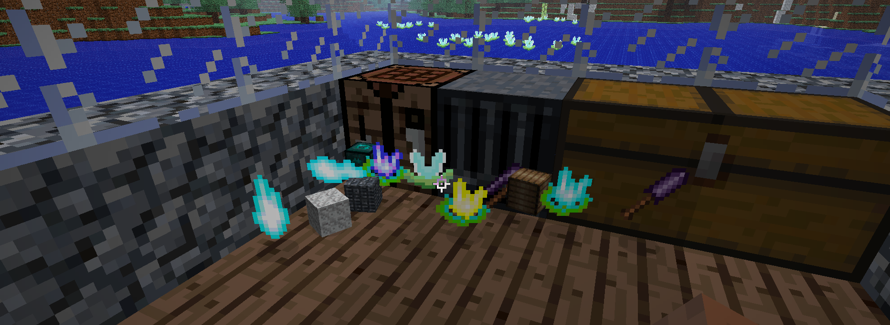
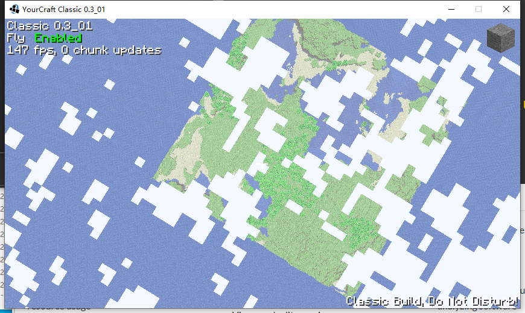
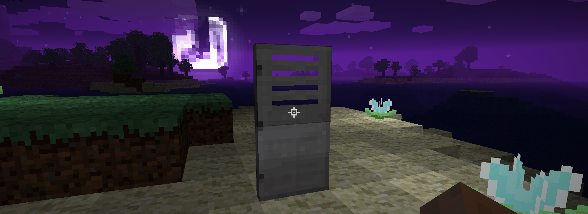
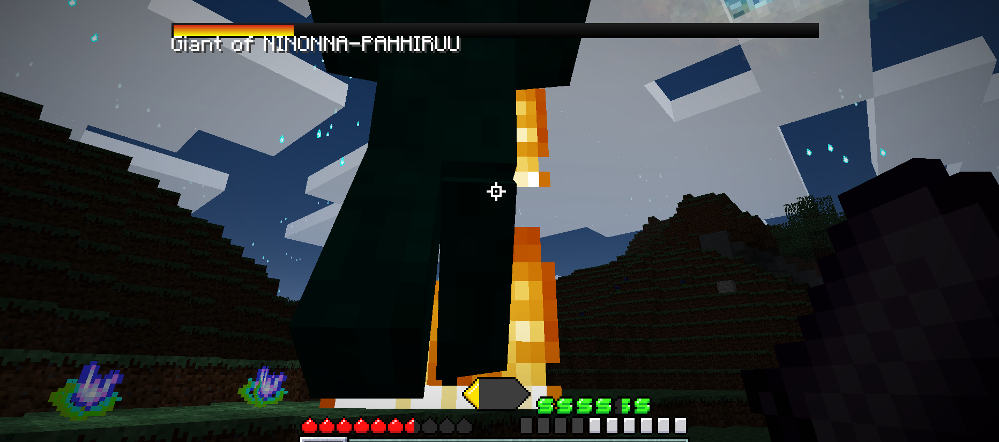

YourCraft brings you a Minecraft-like experience.
Reminder: if you see some link is redirect to about:blank, then it means it's not finished yet!
screenshots down below are from Minecraft Alpha 1.0.16.05 R4
BUILD
using blocks that you known.Check out some of our players' game screenshots here
SURVIVE(Under development)
YourCraft brings you known items to help you survive, but only for furture.
EXPLORE(Under development)
The world to see and uncover many materials and events! Sky isn't the limit!
CONNECT(Under development)
With players from all over the world via the mysterious doors that may sometimes appear in the world!
FIGHT(Under development)
new and horrifying creatures that will pose a challenge to even the best YourCraft players!